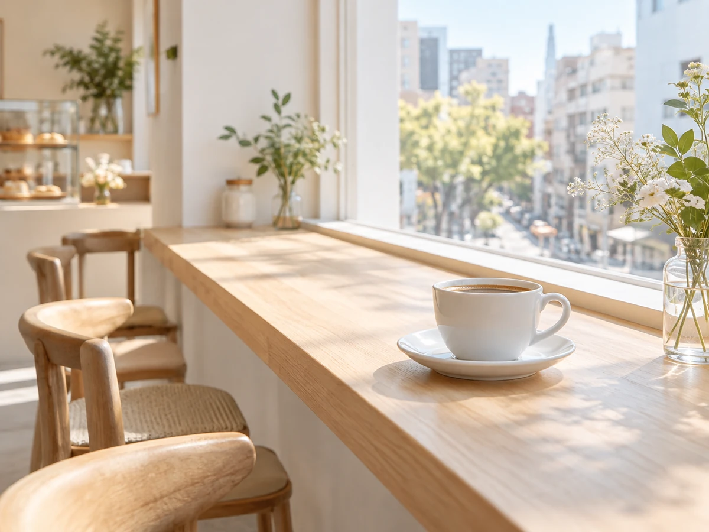

CONCEPT
「低糖質だから」ではなく、
「おいしいから」選ばれる店
café La Douxは、秋田駅前のクロッセ秋田2階にあるカフェです。 料理にも甘味にも、砂糖のかわりに植物由来の天然甘味料「ラカンカ」を使っています。 ラカンカは、糖として吸収されない甘味料です。
低糖質の食事というと、味がもの足りない、選べるものが少ない、という印象を 持たれることがあります。このお店が目指しているのは、その逆です。 ふつうにおいしく食べたあとで、実は低糖質だったと知る。 糖質を気にしている方も、気にしていない方も、同じテーブルで同じものを選べます。
